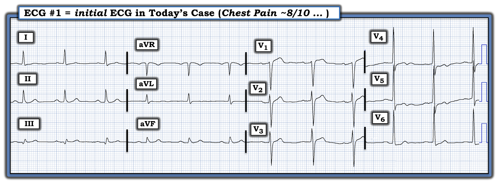
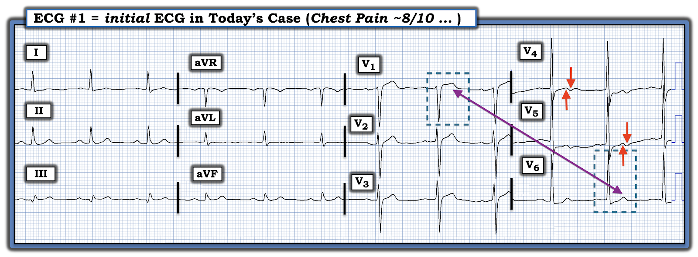
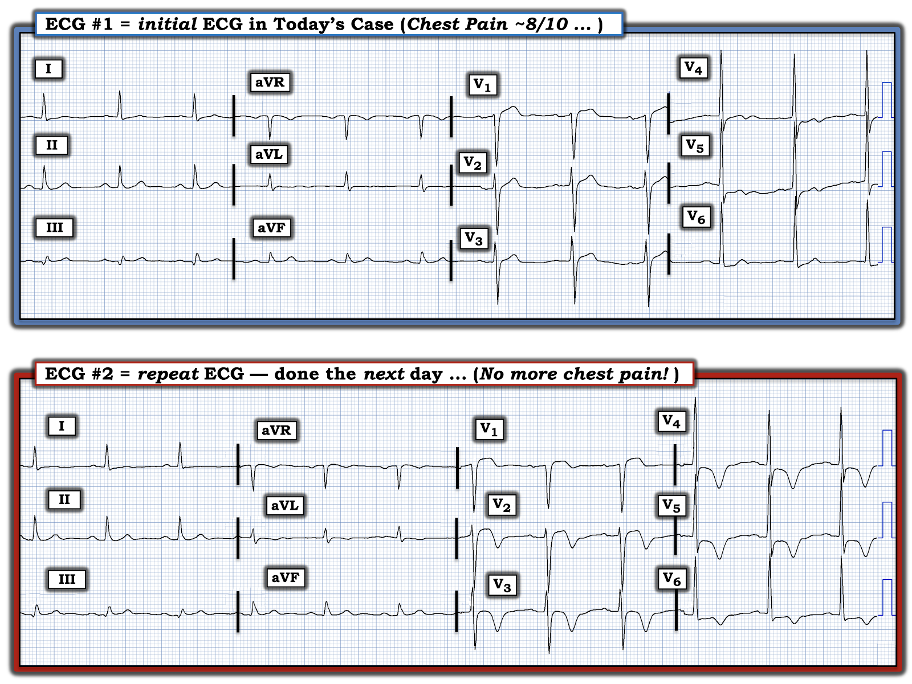
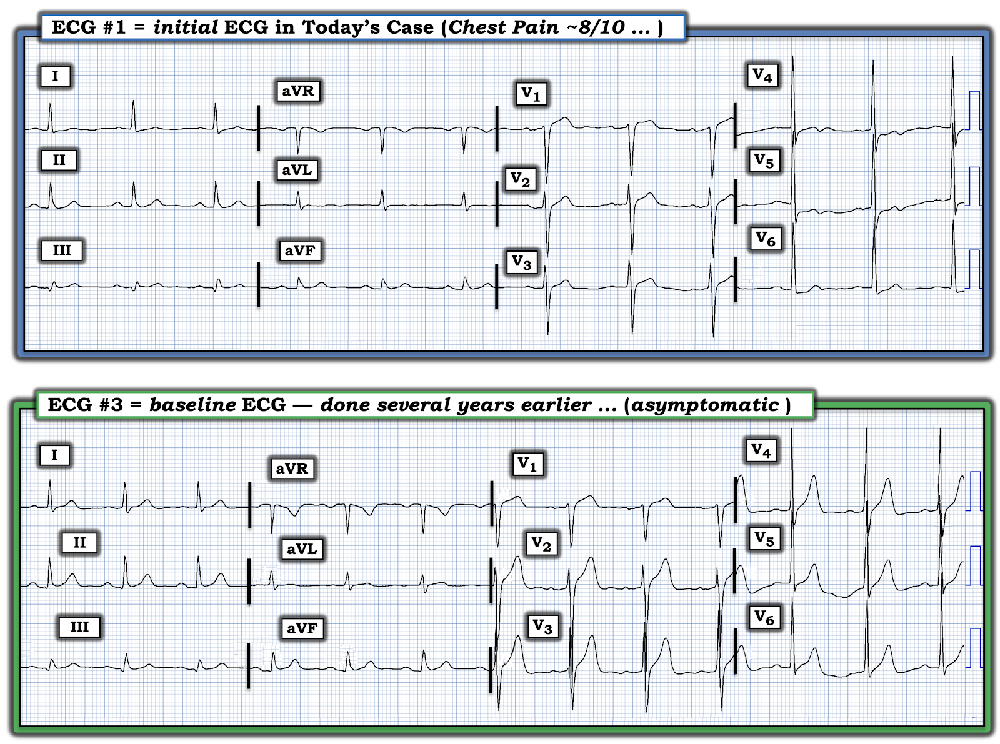
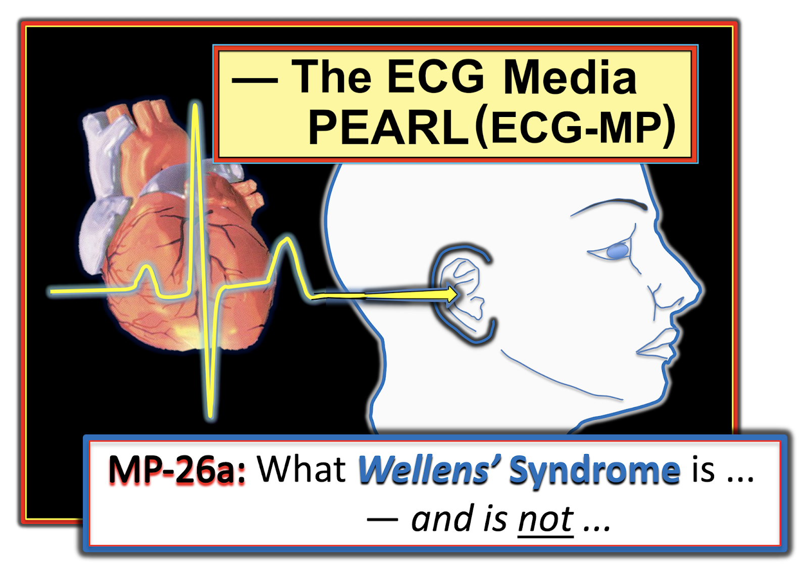

ECG Blog #350 — Đau ngực dữ dội; điện tâm đồ không có gì nhiều
Bệnh nhân có điện tâm đồ ở Hình-1 — được khám tại một phòng khám nông thôn (không gần bệnh viện nào) — vì đau ngực.
CÂU HỎI:
- BẠN sẽ diễn giải điện tâm đồ ở Hình-1 như thế nào?
- Bản ghi này có lành tính không?


SUY NGHĨ CỦA TÔI về điện tâm đồ ở Hình-1:
Nhịp ở điện tâm đồ #1 là nhịp xoang, tần số ~70/phút. Tất cả các khoảng (PR, QRS, QTc) và trục đều bình thường. Không có bằng chứng rõ ràng về lớn các buồng tim.
Về Thay đổi Q-R-S-T:
- Xét kích thước nhỏ của phức bộ QRS ở chuyển đạo III — thì sóng Q ở chuyển đạo này rộng và tương đối lớn. Không thấy sóng Q nào khác.
- Tăng tiến sóng R (R wave progression) — bình thường, với vùng chuyển tiếp (nơi sóng R trở nên cao hơn độ sâu của sóng S) xảy ra bình thường giữa chuyển đạo V3 và V4.
Các dấu hiệu nổi bật nhất ở Hình-1 liên quan đến Thay đổi sóng ST-T:
- Ở Chuyển đạo chi — có ST-T dẹt không đặc hiệu ở các chuyển đạo bên cao I và aVL.
- Mặc dù có thể có một chút ST chênh lên rất nhỏ ở chuyển đạo III — sóng T vẫn dương, và ST-T ở chuyển đạo II và aVF trông bình thường. Nhìn chung — thay đổi ST-T ở các chuyển đạo chi trông không có vẻ cấp tính.
Ở Chuyển đạo trước tim:
- Có ST chênh lên nhẹ, dốc lên ở chuyển đạo V2 và V3 — bản thân điều này không phải là dấu hiệu bất thường (tức là, ST chênh lên nhẹ, dốc lên ở 2 chuyển đạo trước này là dấu hiệu thường gặp và bình thường).
- Tuy vậy — mức ST chênh lên ở chuyển đạo V1 nhiều hơn mức tối thiểu có thể thấy bình thường. Điều làm tăng nghi ngờ rằng ST-T ở chuyển đạo V1 thực sự có ý nghĩa — là các dấu hiệu ở chuyển đạo V6 gồm: i) ST chênh xuống; và, ii) "mất cân đối" sóng T (T wave imbalance), với sóng T dương ở chuyển đạo V6 nhỏ hơn sóng T dương ở chuyển đạo V1 (như được đánh dấu trong các hình chữ nhật chấm chấm màu XANH ở Hình-2 — bàn luận chi tiết bên dưới).
- Cuối cùng — Mặc dù không có đoạn ST chênh lên ở chuyển đạo V3 và V4 — sóng T ở các chuyển đạo này hai pha (ban đầu dương — rồi âm ở phần cuối, như các mũi tên kép màu ĐỎ ở Hình-2).


ĐIỂM THEN CHỐT (PEARL) #1: Khi sóng T ở mọi chuyển đạo trước tim đều dương (như ở Hình-2) — sóng T ở chuyển đạo V1 thường không cao hơn sóng T ở chuyển đạo V6. Sự "Mất cân đối" sóng T trước tim này không gặp thường xuyên — và trong bối cảnh lâm sàng “phù hợp”, nó liên quan với nhồi máu cơ tim do tắc (OMI) mới xảy ra (Occlusion-based MI) do động mạch thủ phạm là LCx (Xem Manno và cs.: JACC 1:1213, 1983 — và bài ngày 17 tháng 7 năm 2013 của Salim Rezaie trên ALiEM).
- LƯU Ý: Điều này không có nghĩa là sóng T cao, dương ở chuyển đạo V1 đôi khi không thể là hậu quả của một biến thể tái cực hoặc hình ảnh phản chiếu của “tăng gánh” thất trái (LV strain) đôi khi thấy ở các chuyển đạo trước. Thay vào đó — tôi chỉ muốn nói rằng đôi khi — tôi nhận thấy việc phát hiện sóng T cao, dương ở chuyển đạo V1 rõ ràng cao hơn sóng T ở chuyển đạo V6 là một manh mối gợi ý hội chứng vành cấp mà có lẽ nếu không tôi đã bỏ sót (Xem ECG Blog #182 và Bình luận của tôi ở cuối trang trong bài ngày 1 tháng 6 năm 2022 trên Dr. Smith's ECG Blog — để xem thêm ví dụ về dấu hiệu này).
- Xin nhấn mạnh: Nếu là một dấu hiệu đơn độc — tôi sẽ không chắc chắn về ý nghĩa của hình dạng ST-T ở chuyển đạo V1. NHƯNG trong bối cảnh lâm sàng của bệnh nhân này đến phòng khám vì đau ngực kèm: i) ST chênh xuống và sóng T dương nhỏ hơn ở chuyển đạo V6 — và — ii) Phần cuối âm của sóng T ở chuyển đạo V3,V4 — mức độ nghi ngờ của tôi về một biến cố mới xảy ra đã tăng lên.
=========================
Ca bệnh Tiếp diễn:
Với tình trạng đau ngực của bệnh nhân — và các dấu hiệu điện tâm đồ nêu trên ở Hình-2 — bệnh nhân đã được chuyển ngay lập tức đến chuyên khoa tim mạch. Nhưng vì mọi triệu chứng sớm hết, và bệnh nhân sống ở xa — ông quyết định về nhà.
- Ngày hôm sau bệnh nhân quay lại phòng khám, cảm thấy "hoàn toàn khỏe" — và đề nghị làm một điện tâm đồ khác với hy vọng được "xác nhận là khỏe mạnh".
Điện tâm đồ ghi lại (được ghi ~17 giờ sau điện tâm đồ #1) — được trình bày cùng với điện tâm đồ ban đầu ở Hình-3.
CÂU HỎI:
- Với bối cảnh lâm sàng nêu trên — BẠN sẽ diễn giải điện tâm đồ #2 ghi lại ở Hình-3 như thế nào?
- Bạn có thể giải thích TẠI SAO các dấu hiệu ST-T ở điện tâm đồ #1 lại kín đáo như vậy — mặc dù bệnh nhân đau ngực mức 8/10?


SUY NGHĨ CỦA TÔI về các điện tâm đồ ở Hình-3:
Đã có thay đổi ngoạn mục về hình dạng của điện tâm đồ #2 — so với điện tâm đồ #1 được ghi ngày hôm trước!
- Ngoài sóng T đảo ngược nông, tối thiểu ở chuyển đạo aVL của điện tâm đồ #2 — về cơ bản không có thay đổi gì ở các chuyển đạo chi. Sóng Q tương đối lớn ở chuyển đạo III không thay đổi.
- Ngược lại — đoạn ST giờ đây có dạng vòm (coving) ở tất cả các Chuyển đạo trước tim — với ST chênh lên kéo dài ở chuyển đạo V1,V2 — điểm J chênh xuống tăng lên ở chuyển đạo V4,V5,V6 — và sóng T đảo ngược sâu, đối xứng mới xuất hiện ở tất cả các chuyển đạo trước tim.
- Ngoài ra — điều quan trọng cần LƯU Ý: i) Chuyển đạo V2 có ST chênh lên nhẹ kèm sóng T ban đầu dương rồi đi xuống dốc đứng, chuyển thành âm ở phần cuối; và, ii) Sóng R vùng trước vẫn được bảo tồn! — và, iii) Bệnh nhân không đau ngực vào lúc ghi điện tâm đồ #2!
- NHẬN ĐỊNH: Bệnh cảnh lâm sàng và các điện tâm đồ liên tiếp của bệnh nhân này cho phép chẩn đoán Hội chứng Wellens! Sóng T đảo ngược sâu khắp các chuyển đạo trước tim là sóng T tái tưới máu do tắc LAD đoạn gần đã tự thông trở lại. Việc LAD nhiều khả năng hiện vẫn còn "thông" — được ủng hộ bởi thực tế là cơn đau ngực của bệnh nhân không tái phát kể từ ngày hôm trước. Thêm một thực tế là biên độ sóng R ở các chuyển đạo trước tim vẫn được bảo tồn — là điều đáng mừng, gợi ý mức độ tổn thương cơ tim có thể hạn chế!
Hội chứng Wellens là gì?
Ý nghĩa lâm sàng của Hội chứng Wellens — là việc nhận ra nó cho bạn biết bệnh nhân có hẹp động mạch vành LAD (động mạch liên thất trước — Left Anterior Descending) mức độ nặng, nhiều khả năng kèm huyết khối "nóng" có khuynh hướng cao lan rộng và/hoặc gây tắc hoàn toàn LAD ở bất kỳ thời điểm nào (kể cả ngay lập tức). Tuy vậy — Hội chứng Wellens vẫn là một thực thể lâm sàng bị hiểu sai và thường bị chẩn đoán nhầm. Để làm rõ — Hãy xem xét các đặc điểm lâm sàng và điện tâm đồ MẤU CHỐT xác lập chẩn đoán Hội chứng Wellens:
- Phải có tiền sử đau ngực trước đó đã hết vào lúc ghi điện tâm đồ dùng để chẩn đoán.
- Không có hơn mức tăng troponin tối thiểu (nếu có).
- Không có sóng Q nhồi máu mới.
- Có thể có ST chênh lên nhẹ (nhưng không rõ rệt) ở một hoặc nhiều chuyển đạo trước tim.
- Có sóng T hai pha đặc trưng, với sóng T đi xuống nhanh thành âm ở phần cuối ở một hoặc nhiều chuyển đạo trước tim (thường gặp nhất ở chuyển đạo V2 và/hoặc V3 và/hoặc V4). LƯU Ý: Hình ảnh sóng T đặc trưng này có thấy ở chuyển đạo V2 của điện tâm đồ #2 (ở Hình-3).
Hội chứng Wellens KHÔNG phải là gì:
Hiểu lầm lớn nhất liên quan đến việc Hội chứng Wellens không phải là gì! Cách tốt nhất để tránh hiểu lầm này là nắm được sinh lý bệnh của hội chứng. Về bản chất — hình ảnh sóng T hai pha đặc trưng với phần cuối âm phản ánh một sóng T tái tưới máu! Bệnh nhân gần đây đã bị tắc LAD hoàn toàn trong một khoảng thời gian ngắn — nhưng giờ đã tái tưới máu tự phát.
- Đau ngực cần có theo định nghĩa của Hội chứng Wellens đã xảy ra vào thời điểm động mạch vành bị tắc. Nhưng lý do định nghĩa Hội chứng Wellens đòi hỏi bệnh nhân phải hết đau vào lúc ghi điện tâm đồ dùng để chẩn đoán — là vì tổn thương LAD "thủ phạm" giờ đã thông. NẾU tổn thương LAD "thủ phạm" vẫn còn tắc — thì thay vì một cảnh báo nhồi máu sắp xảy ra (vốn là mục đích của việc nhận ra sớm Hội chứng Wellens) — sẽ là nhồi máu cấp đang diễn ra.
- Không có hơn mức tăng troponin tối thiểu (nếu có) — vì thời gian tắc động mạch vành quá ngắn nên tổn thương cơ tim gây ra không quá mức tối thiểu. NẾU troponin tăng nhiều hơn — điều này hàm ý tổn thương cơ tim đáng kể đã xảy ra (mà theo định nghĩa có nghĩa là bạn đang đối mặt với một nhồi máu đã hoàn tất — chứ không phải Hội chứng Wellens).
- Cũng vì lý do này — không được có sóng Q (hoặc QS) nhồi máu mới.
- ST chỉ chênh lên nhẹ — vì Hội chứng Wellens không phải là STEMI (tức là, nó không phải nhồi máu cơ tim "có ST chênh lên").
- Thay vào đó — sóng T hai pha đặc trưng với sóng T đi xuống nhanh thành âm ở phần cuối là dấu hiệu cho thấy LAD đã bị tắc hoàn toàn trong thời gian ngắn, và nay đã tái tưới máu. Dấu hiệu điện tâm đồ này là một sóng T tái tưới máu. Nó có thể trông giống hệt hình dạng ST-T sau một STEMI có tăng troponin rõ rệt và nay đã tái tưới máu (dù tái tưới máu tự phát — hay nhờ điều trị bằng PCI hoặc thuốc tiêu sợi huyết).
- Về lâm sàng — nguy cơ do Hội chứng Wellens đặt ra — là nó chứng minh rằng đã có tắc LAD cấp do huyết khối, dù thời gian ngắn và sau đó mạch tự thông trở lại. Nhưng thứ gì đã tự tắc rồi lại thông — thì có nguy cơ cao tự tắc lại (không có gì bảo đảm rằng mạch sẽ lại tự thông vào lần tắc tiếp theo).
- CẢNH BÁO: Chẩn đoán Hội chứng Wellens cần được đưa ra thận trọng (nếu có) ở bệnh nhân có LVH rõ rệt và thay đổi ST-T kiểu "tăng gánh" thất trái. Đó là vì dấu hiệu điện tâm đồ tăng biên độ QRS đi kèm với vùng chuyển tiếp trước tim đột ngột từ phức bộ QRS chủ yếu âm sang chủ yếu dương — có thể tạo ra hình dạng ST-T giống hệt sóng T hai pha với phần cuối âm đặc trưng của thay đổi Wellens (Xem ECG Blog #209 và Blog #254 và Blog #309 — để xem một số ví dụ về hình ảnh Wellens "dương tính giả" này).
- Mời xem Audio Pearl và Hình-5 và -6 bên dưới trong PHẦN BỔ SUNG để biết thêm về Hội chứng Wellens
TẠI SAO khi đó các dấu hiệu ST-T lại Kín đáo như vậy ở điện tâm đồ #1?
Ban đầu tôi thấy ngạc nhiên là mặc dù có tiền sử đau ngực mới dữ dội (điểm mức độ chủ quan do bệnh nhân tự đánh giá = 8/10) — các dấu hiệu điện tâm đồ trên bản ghi ban đầu lại tương đối khiêm tốn.
- Lý do có thể của các dấu hiệu ST-T tương đối khiêm tốn trên bản ghi ban đầu — là điện tâm đồ #1 có lẽ phản ánh trạng thái "giả bình thường hóa". Nhiều khả năng vài phút trước khi ghi điện tâm đồ #1 — đã có ST chênh lên rõ ở các chuyển đạo trước tim. NẾU LAD bị hẹp vừa mới tự thông trở lại gần thời điểm ghi điện tâm đồ #1 — thì các đoạn ST đang chênh lên "trên đường" tiến tới sóng T đảo ngược sâu có thể gần như đẳng điện, như ở điện tâm đồ #1.
- ĐIỂM THEN CHỐT (PEARL) #2: Sự xuất hiện sóng T hai pha (lên-xuống) kín đáo nhưng có thật, như thấy ở chuyển đạo V4,V5 trên điện tâm đồ #1 (các mũi tên kép màu ĐỎ ở Hình-2) — ở bệnh nhân có cơn đau ngực dữ dội đang giảm nhanh, có thể là dấu hiệu sớm nhất của hình dạng sóng T đặc trưng trong Hội chứng Wellens.
- ĐIỂM THEN CHỐT (PEARL) #3: Như đã nhấn mạnh ở trên — một tiêu chuẩn thiết yếu để chẩn đoán Hội chứng Wellens, là bệnh nhân phải hết đau vào lúc ghi điện tâm đồ dùng để chẩn đoán. Nhưng bắt được trạng thái "hết đau" này trên điện tâm đồ tùy thuộc vào việc ghi điện tâm đồ khi nào và bao nhiêu lần! Mặc dù bệnh nhân trong ca hôm nay vẫn còn đau ngực dữ dội vào lúc ghi điện tâm đồ #1 — theo tiền sử nêu trên, cơn đau ngực của bệnh nhân đã hết ngay sau khi ghi điện tâm đồ #1 — và bệnh nhân vẫn không đau (ít nhất cho đến khi ông quay lại phòng khám vào ngày hôm sau để ghi điện tâm đồ #2).
- ĐIỂM THEN CHỐT (PEARL) #4: Tầm quan trọng của việc nhận ra sớm Hội chứng Wellens — là nó xác định một hẹp LAD đoạn gần mức độ nặng đã trải qua một đợt tắc ngắn (may mắn là tổn thương LAD "thủ phạm" đã tự thông trở lại). Vấn đề là LAD có thể tự tắc lại — mà không có gì bảo đảm rằng nó sẽ lại tự thông. Vì vậy — nhận ra Hội chứng Wellens là chỉ định thông tim kịp thời với hy vọng ngăn ngừa một đợt tắc kéo dài hơn gây tổn thương cơ tim đáng kể.
Điện tâm đồ Nền của Bệnh nhân này Cho thấy Gì?
Bằng chứng ủng hộ rằng các dấu hiệu điện tâm đồ kín đáo trên bản ghi ban đầu thực sự là cấp tính — đã có được khi điện tâm đồ trước đây của bệnh nhân được cung cấp.
- Hãy so sánh điện tâm đồ nền (ghi vài năm trước — vào thời điểm ông không có triệu chứng) của bệnh nhân — với điện tâm đồ ban đầu trong ca hôm nay (Hình-4). BẠN thấy GÌ?


So sánh Điện tâm đồ Nền với Điện tâm đồ #1:
- Các chuyển đạo thành dưới trên điện tâm đồ nền gần như giống hệt các chuyển đạo thành dưới trên bản ghi ban đầu hôm nay. Lưu ý ở Hình-4 — sóng Q tương đối lớn và rộng ở chuyển đạo III về cơ bản không thay đổi. Điều này xác nhận rằng sóng Q này không phải là dấu hiệu mới. Sóng Q này ở chuyển đạo III là nhồi máu thành dưới cũ hay chỉ là dấu hiệu tình cờ không có ý nghĩa thì chưa chắc chắn (tức là, sóng Q đơn độc ở chuyển đạo III hoặc chuyển đạo aVF không nhất thiết là dấu hiệu bất thường).
- Ở các chuyển đạo I và aVL bên cao — có ST-T dẹt không đặc hiệu ở điện tâm đồ #1 mà không thấy trên bản ghi nền.
- Ở các Chuyển đạo trước tim — sóng T ở chuyển đạo V1 đến V6 đều dương và có hình dạng bình thường. Đặc biệt lưu ý rằng biên độ sóng T dương ở chuyển đạo V6 của điện tâm đồ #3 rõ ràng lớn hơn biên độ sóng T ở chuyển đạo V1 (tức là, Không có "mất cân đối" sóng T ở các chuyển đạo trước tim trên bản ghi nền).
- Mức ST chênh lên tại điểm J ở chuyển đạo V1 nhiều hơn ở điện tâm đồ #1 — so với trên bản ghi nền.
- ĐIỀU CỐT LÕI: Việc có điện tâm đồ nền của bệnh nhân này xác nhận rằng các dấu hiệu điện tâm đồ kín đáo mô tả ở trên tại chuyển đạo I,aVL; V1; V3,V4; và V6 trên bản ghi ban đầu hôm nay — đều là dấu hiệu cấp tính!
DIỄN TIẾN CUỐI CÙNG:
Tiếc là tôi không biết chi tiết diễn tiến lâu dài của bệnh nhân hôm nay. Nhưng chẩn đoán cuối cùng của đợt nhập viện này là "NSTEMI" (tức là, nhồi máu cơ tim không ST chênh lên — Non-ST Elevation Myocardial Infarction) — vậy rõ ràng là đã bỏ sót việc nhận ra Hội chứng Wellens.
- Ngay cả khi không có troponin xác nhận — tiền sử lâm sàng trong ca hôm nay, khi đối chiếu với các điện tâm đồ liên tiếp của bệnh nhân, cho phép chẩn đoán OMI (tức là, tắc động mạch vành thoáng qua do Hội chứng Wellens — sau đó tổn thương LAD "thủ phạm" tự thông trở lại).
- Điều trị tối ưu lẽ ra phải bao gồm thông tim kèm PCI.
ĐIỂM THEN CHỐT (PEARL) #5: Một "Điều cần nhớ" MẤU CHỐT từ ca hôm nay — là hiểu được tầm quan trọng của việc đối chiếu thời điểm cụ thể của các điện tâm đồ liên tiếp với mức độ triệu chứng. Chính vì diễn tiến của một biến cố tim cấp đang tiến triển có thể ngắt quãng (stuttering) (tức là, tái tưới máu tự phát — rồi động mạch "thủ phạm" tắc lại — đôi khi lặp lại nhiều lần cho đến khi mạch thủ phạm đạt "trạng thái cuối cùng") — nên chỉ có thể biết được câu chuyện thực sự qua sự đối chiếu chi tiết này. Ví dụ:
- Các thay đổi ST-T tương đối khiêm tốn thấy ở điện tâm đồ #1 của ca hôm nay (mặc dù lúc đó bệnh nhân đau ngực dữ dội) — trở nên hợp lý khi diễn giải bản ghi ban đầu này trong đối chiếu với hình dạng ST-T hoàn toàn bình thường trên bản ghi nền — và — sóng T đảo ngược sâu, đối xứng xuất hiện sau đó ở điện tâm đồ #2 vào lúc bệnh nhân đã hết đau. Chính sự đối chiếu giữa triệu chứng và các điện tâm đồ liên tiếp này cho phép chẩn đoán xác định Hội chứng Wellens (với một OMI thoáng qua đã xảy ra — thay vì chẩn đoán "mặc định" NSTEMI mà nhóm điều trị ở bệnh viện đã đưa ra).
- Để xem một ví dụ khác về việc đối chiếu từng-bước các điện tâm đồ liên tiếp với mức độ triệu chứng — Hãy xem ECG Blog #337.
ĐIỂM THEN CHỐT (PEARL) #6: Tôi khép lại ca hôm nay bằng việc nhắc ngắn gọn đến một khái niệm mới gọi là "Xoáy trước tim" (Precordial Swirl). Hình ảnh điện tâm đồ độc đáo này gợi ý mạnh đến tắc LAD (thường ở gần hơn nhánh xuyên vách thứ 1) ở vị trí rất gần — dẫn đến thiếu máu cục bộ vách, bên cạnh tổn thương thành trước và vùng mỏm (Chi tiết trong bài ngày 15 tháng 10 năm 2022 trên Dr. Smith's ECG Blog).
- Trong bối cảnh OMI LAD cấp — dấu hiệu "Xoáy" trước tim được nhận ra nhờ ST chênh lên ở chuyển đạo V1 và aVR — và ST chênh xuống soi gương ở chuyển đạo V5 và V6. Tôi thích tập trung vào hình dạng ST-T ở chuyển đạo V1 và V6.
- Mặc dù ST chênh lên dốc lên 1-2 mm thường gặp (và bình thường) ở các chuyển đạo trước V2 và V3 — phần lớn trường hợp chúng ta không thấy ST chênh lên ở chuyển đạo V1 (hoặc nếu có — thì rất ít!). Vì vậy — tôi lập tức nghi ngờ "xoáy trước tim" bất cứ khi nào có gợi ý OMI LAD — và — ngoài ra chuyển đạo V1 trông khác với dự kiến!
- LƯU Ý: Đôi khi việc nhận ra chuyển đạo V1 trông "khác-với-dự-kiến" — chỉ đến sau khi nhận thấy chuyển đạo V2 rõ ràng bất thường.
Thay vì "xoáy trước tim" — bản ghi ban đầu hôm nay là một phần trong quá trình tiến triển của Hội chứng Wellens. Nhưng lưu ý rằng có ST chênh lên bất thường ở chuyển đạo V1 (rõ ràng là mới so với điện tâm đồ nền #3) — và — có ST chênh xuống ở chuyển đạo V6 của điện tâm đồ #1 (cũng không có trên bản ghi nền) — và — từ tiền sử của ca hôm nay, chúng ta biết rằng tắc LAD thoáng qua đã xảy ra.
- Tôi ngờ rằng NẾU chúng ta ghi được một điện tâm đồ trước điện tâm đồ #1 một chút — thì chúng ta đã thấy ST chênh lên ở các chuyển đạo trước với các dấu hiệu ST-T rõ ràng phù hợp với "xoáy trước tim".
==================================
PHẦN BỔ SUNG (1/10/2021): Trong 2 Hình sau — tôi đăng bản tóm tắt từ ECG-2014-ePub của tôi về Hội chứng Wellens.
- BẤM VÀO ĐÂY — để tải bản PDF của tệp 3 trang về Hội chứng Wellens này, được trình bày ở Hình-5 và Hình-6.



ECG Media PEARL #26a (7:40 phút Audio) hôm nay — Điểm lại Hội chứng Wellens là gì — và không phải là gì.
==================================
LỜI CẢM ƠN: Tôi xin cảm ơn Kianseng Ng và Chris Chow (đến từ Malaysia) đã cung cấp ca bệnh và bản ghi này.
- Ghi nhận Kianseng Ng là người đặt ra câu nói sau: Nếu tiền sử điển hình mà điện tâm đồ lại "bình thường" — thì có lẽ bạn đã bỏ sót điều gì đó trên điện tâm đồ.
==================================
Các bài ECG Blog liên quan đến Ca hôm nay:
- ECG Blog #205 — Điểm lại Cách tiếp cận hệ thống của tôi trong đọc điện tâm đồ 12 chuyển đạo (tóm lược ở Hình-2 và -3, và là chủ đề của Audio Pearl MP-23 trong Blog #205).
- ECG Blog #209 và ECG Blog #254 và ECG Blog #309 — Điểm lại các ca LVH rõ rệt gây thay đổi ST-T tương tự như có thể thấy trong Hội chứng Wellens.
- ECG Blog #245 — Điểm lại cách tiếp cận của tôi trong chẩn đoán LVH (tóm lược ở Hình-3 và -4, và là chủ đề của Audio Pearl MP-59 trong Blog #245) trên điện tâm đồ.
- ECG Blog #320 — Điểm lại OMI cấp của nhánh chéo thứ 1 hoặc thứ 2 (biểu hiện dưới dạng Hội chứng Wellens).
- ECG Blog #326 — Điểm lại một ca Hội chứng Wellens bị bỏ sót.
- ECG Blog #182 — và Bình luận của tôi ở cuối trang trong bài ngày 1 tháng 6 năm 2022 trên Dr. Smith's ECG Blog — trình bày các ví dụ về Mất cân đối sóng T (tức là, Khi sóng T dương ở chuyển đạo V1 cao hơn sóng T ở chuyển đạo V6).
- ECG Blog #337 — Điểm lại một ca minh họa việc đối chiếu lâm sàng từng bước giữa các điện tâm đồ liên tiếp với mức độ triệu chứng.
- Xem bài ngày 15 tháng 10 năm 2022 (kể cả Bình luận của tôi ở cuối trang) — để điểm lại và minh họa khái niệm "Xoáy trước tim" (do OMI LAD đoạn gần).